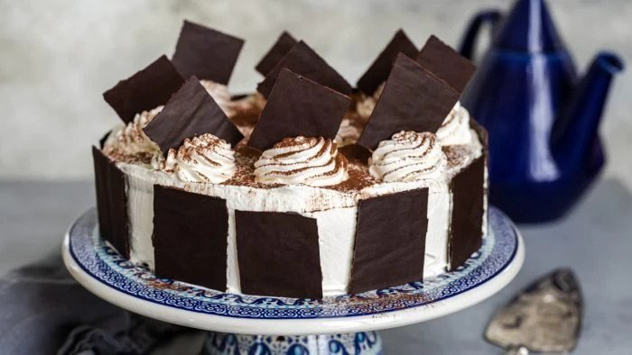
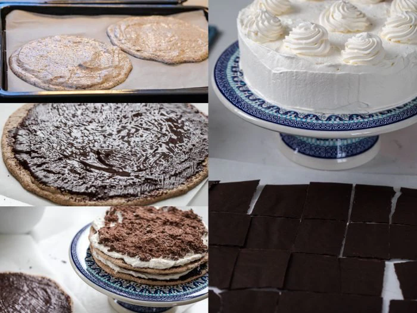

Schwarzwaldtarta
--Original Recipe--
Original recipe in Swedish, translation needed, use chrome browser

Gluten Free | Contains Nuts & Dairy
Description
The Schwarzwaldtarta cake has wonderful nut bases with lots of chocolate and
cream, as good as it gets! It is similar to the Black Forest cake but without the cherry.
It is one of the more complicated cake recipes
due the time needed to prep the ingredients.
Ingredients
Cake Bases
- 6 egg whites
- 300 g icing sugar
- 200 g hazelnut flour/meal
- 100 g chocolate - milk, melted
Filling
- 800 ml whipping cream (35% fat minimum)
- 100 g icing sugar
- 100 g chocolate - milk, melted
- 1 tbsp vanilla sugar
Chocolate Bars
- 150 g Chocolate - milk
- 0.5 tbsp neutral cooking oil
Garnish

Method
- Set the oven to 150 degrees. Line two baking sheets with baking paper and draw 3 rounds of approximately 20 cm in diameter.
- Beat the egg whites hard. Add icing sugar towards the end and beat to a white fluffy meringue. Carefully fold in the hazelnut flour.
- Spread the batter on the rounds and bake them in the middle of the oven for 25–30 min. I ran both plates at the same time on hot air.
- Turn off the oven and set it slightly ajar and let the bases cool completely in the oven. (Here you can take the opportunity to make the chocolate bars so they are ready)
- Carefully detach the bottoms from the paper, brush them with melted chocolate on the top and let them harden.
- Filling: Whip the cream with the icing sugar. Set half of the cream in the fridge for later. Mix half of the cream you have in front of you with the melted chocolate and the other half with vanilla sugar.
- Spread half of the chocolate cream and half of the vanilla cream on a base with the chocolate side up. Place on the next base and spread on the rest of the chocolate and vanilla cream. Add the last base.
- Take the cream out of the fridge and spread it on top and around the edges of the cake. Sprinkle some tops that you can put the chocolate bars in.
- Chocolate bars: Melt the chocolate over a water bath together with the oil and stir well. Spread a thin layer of chocolate on a baking sheet.
- Cut out square pieces with a sharp knife while it is still a little soft. Let the plates harden in the fridge.
- Garnish the cake with the chocolate bars. Sprinkle cocoa over the cream before serving.
Return To Top
Return To Homepage